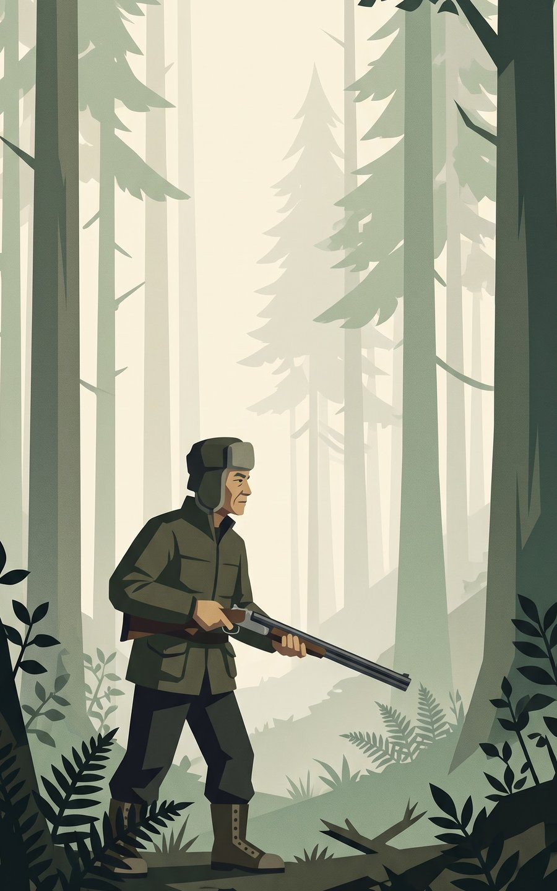
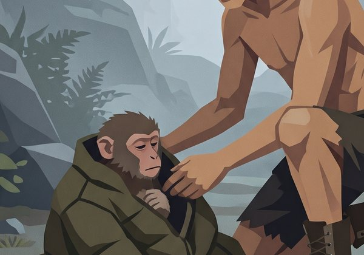

NGỮ VĂN 12 • ẤN BẢN SÁCH ĐIỆN TỬ
MUỐI CỦA RỪNG
Lời Mở Đầu
Văn học chân chính luôn là cuộc đối thoại thầm kín nhưng mãnh liệt giữa con người với thiên nhiên và với chính phần sâu thẳm nhất trong bản ngã mình. Khi ra đời vào năm 1986, truyện ngắn “Muối của rừng” của Nguyễn Huy Thiệp đã lập tức tạo nên dấu ấn riêng biệt trong văn học Việt Nam thời kỳ Đổi mới nhờ giọng điệu tỉnh táo, sắc lạnh mà ẩn chứa lòng trắc ẩn sâu xa đối với muôn loài.
Câu chuyện theo chân ông Diểu — một người đàn ông sáu mươi tuổi mang khẩu súng hai nòng tối tân bước vào vương quốc đá vôi Nam Xung vào tiết mưa bụi mùa xuân. Chuyến đi săn tưởng chừng chỉ để tìm thú vui tuổi già bỗng biến thành một cuộc thử thách lương tri khốc liệt: từng lớp trang bị văn minh bị đại ngàn tước bỏ, để rồi từ tay trắng trần trụi, con người mới nhận ra vẻ đẹp thiêng liêng của sự sống.
Cuốn sách điện tử do Nhóm 3 biên soạn được trình bày như một ấn bản đọc trọn vẹn gồm sơ đồ mạch truyện, các chương phân tích hành trình đi săn của ông Diểu cùng giọng đọc đồng hành theo từng trang. Mời thầy cô và các bạn lật nhẹ góc trang để bước vào không gian mưa xuân năm ấy.
“Sau Tết Nguyên đán một tháng là thời gian thích nhất ở rừng. Cây cối đều nhú lộc non. Rừng xanh ngắt và ẩm ướt. Thiên nhiên vừa trang trọng vừa tình cảm. Điều ấy một phần là do mưa xuân.”
— Nguyễn Huy Thiệp, 1986
Nguyễn Huy Thiệp (1950 – 2021) sinh tại Hà Nội, quê gốc ở huyện Thanh Trì. Trước khi trở thành hiện tượng văn học từ cuối thập niên 1980, ông từng có nhiều năm dạy học ở vùng núi Tây Bắc. Chính quãng đời gắn bó với thiên nhiên rừng núi phía Bắc đã mang lại cho trang viết của ông cái nhìn vừa chân thực, trần trụi về tập tính loài vật và đời sống sơn cước, vừa giàu chất thơ triết lý về mối quan hệ giữa con người và tự nhiên.
Sáng tác năm 1986, “Muối của rừng” chọn ngôi kể thứ ba hạn tri với điểm nhìn đặt xuyên suốt qua nhận thức và tâm trạng của nhân vật ông Diểu. Cách chọn điểm nhìn ấy cho phép người đọc chứng kiến từng bước chuyển biến vi tế: từ cái nhìn trịch thượng, đa nghi của kẻ cầm súng đến khoảnh khắc sững sờ, xót thương và khiêm nhường cúi đầu trước thiên nhiên rộng lớn.
Sơ Đồ Hành Trình

Vào rừng dâu da mùa xuân
Ông Diểu tuổi sáu mươi mang súng hai nòng, áo ấm, mũ lông, nắm xôi tiến vào rừng săn khỉ với tâm thế tự tin kiêu hãnh.

Phát súng & Vực Hõm Chết
Bắn hạ khỉ đực; khỉ cái quay lại cứu chồng bị ông mắng là giả dối; khỉ con túm dây đeo súng kéo chạy rồi rơi xuống vực Hõm Chết.

Ánh mắt cầu xin trên mỏm đá
Cởi giày và áo ngoài vắt lên chạc cây duối để trèo vách đá; đôi mắt run rẩy cầu khẩn của khỉ đực đánh thức lòng trắc ẩn trong ông.

Nắm cỏ Lào, Núi lở & Phóng sinh
Nhai nắm cỏ Lào đắp cầm máu, tự nguyện cởi chiếc quần lót băng cho khỉ; núi lở cuốn cây duối, đống mối đùn lấp mũ xôi; cảm động thả khỉ về rừng.

Hoa tử huyền — “Muối của rừng”
Trần truồng rẽ lối gai tránh người giữa mưa xuân dịu hạt, ông gặp bạt ngàn hoa tử huyền trắng muốt ba mươi năm mới nở một lần.
Năm chặng cốt truyện nối nhau như một vòng tuần hoàn đạo lý: khởi đầu bằng phát súng chia lìa sự sống, khép lại bằng bàn tay buông tha và loài hoa kết tinh từ bình yên đất trời. Mối quan hệ nhân quả xuyên suốt tác phẩm khẳng định rằng khi con người từ bỏ tham vọng chế ngự tự nhiên, phần nhân tính tinh sạch nhất sẽ tự khắc hồi sinh.
Tâm Thế Kẻ Chinh Phục
Chuyến đi săn của ông Diểu bắt đầu trong một khung cảnh thiên nhiên đẹp đến nao lòng. Sau Tết Nguyên đán một tháng, hơi ấm mùa xuân lan tỏa khắp núi rừng Nam Xung, cây cối nhú lộc non mơn mởn dưới màn mưa bụi dịu nhẹ. Nhà văn Nguyễn Huy Thiệp đã dùng một nhận xét tinh tế để đặt nền cho toàn bộ truyện: thiên nhiên lúc ấy “vừa trang trọng vừa tình cảm”.
Đối lập với vẻ thuần hậu, bao dung của đất trời là dáng vẻ trang bị tận răng của người đi săn. Ở tuổi sáu mươi, ông Diểu bước vào khu rừng dâu da rậm rạp với quần áo ấm, chiếc mũ lông che tai, đôi giày cao cổ vững chãi cùng nắm xôi nếp mang theo bên mình. Nổi bật hơn cả là khẩu súng săn hai nòng tuyệt đẹp do người con trai đang học ở nước ngoài gửi về biếu.
Với ông Diểu, khẩu súng hiện đại ấy không chỉ là công cụ sát sinh mà còn là niềm kiêu hãnh về sức mạnh văn minh, khiến ông tự tin nhìn muôn loài trong rừng bằng con mắt của kẻ bề trên đi chinh phục và hưởng thụ chiến lợi phẩm.
Đến gần khu rừng dâu da sum suê quả chín, ông Diểu bắt gặp một gia đình khỉ gồm ba con đang quấn quýt bên nhau trên mỏm đá cao: con khỉ đực to lớn đầu đàn, con khỉ cái nhanh nhẹn và một chú khỉ con nhỏ bé. Giữa buổi sáng yên bình ấy, bản năng thợ săn khiến ông nín thở giương nòng súng hướng thẳng về phía sinh linh đang tự do giữa đại ngàn.
Tiếng súng vang rền xé toạc sự tĩnh lặng trang trọng của khu rừng xuân. Con khỉ đực trúng đạn ngã gục xuống vách đá. Ngay khoảnh khắc hiểm nguy ấy, con khỉ cái không hề bỏ chạy thoát thân mà liều mình lao trở lại bên cạnh đỡ chồng, phát ra những tiếng kêu thảng thốt đầy thương xót. Cảnh tượng tình nghĩa thiêng liêng của loài vật đáng lẽ phải làm lay động lòng người, nhưng ông Diểu lúc này vẫn bị che mờ bởi thành kiến ích kỷ.
Ông xua đuổi khỉ cái và buông lời mắng nhiếc cay nghiệt: “Đồ gian dối, mày chứng minh tấm lòng cao thượng hệt như một bà trưởng giả!” Câu mắng lạnh lùng ấy đánh dấu đỉnh cao của sự ngạo mạn: con người tự cho mình quyền phán xét cả tình yêu thương thuần khiết của tự nhiên.

Tiếng Hú Nơi Bờ Vực Sâu
Đúng lúc ông Diểu đang mải quát tháo và ném đá xua đuổi con khỉ cái bướng bỉnh, một biến cố hoàn toàn nằm ngoài tính toán đã xảy ra. Trong phút ông sơ hở đặt súng xuống bên tảng đá, con khỉ con đã bất ngờ lao ra, dũng cảm nhảy xuống túm chặt lấy dây đeo khẩu súng hai nòng rồi kéo lê bỏ chạy về phía triền núi hiểm trở.
Quá sửng sốt trước hành động táo bạo của sinh linh bé nhỏ, ông Diểu hốt hoảng gào thét và đuổi gấp theo sau. Cuộc rượt đuổi nghẹt thở đẩy chú khỉ con chạy dồn tới sát mép Hõm Chết — một cái khe núi sâu hun hút, quanh năm sương mù đặc quánh đến rợn người, nơi người dân miền sơn cước vẫn truyền tai nhau rằng năm nào cũng có người bị sương mù giăng bẫy mà bỏ mạng.
Trong cơn hoảng loạn tột cùng khi không còn đường lui, con khỉ con cùng khẩu súng hai nòng đã trượt chân lăn thẳng xuống đáy vực mịt mù sương trắng, để lại một tiếng kêu thê thảm vang vọng mãi vào vách đá.
Âm thanh rùng rợn dội lên từ lòng vực Hõm Chết như tiếng oán trách trực tiếp của đại ngàn khiến người thợ săn lão luyện bỗng bủn rủn chân tay. Nỗi sợ hãi nguyên sơ ập đến xóa sạch vẻ uy nghi của kẻ cầm súng ban sáng; ông Diểu kinh hoàng quay đầu chạy thục mạng “như ma đuổi” khỏi miệng vực đầy tử khí.
Về mặt cốt truyện, sự biến mất của khẩu súng hai nòng dưới đáy vực là bước ngoặt mang tính bản lề trong quá trình đi săn. Món quà đắt giá từ phương Tây — biểu tượng cho sức mạnh văn minh, cho bạo lực áp đặt và tâm thế thống trị tự nhiên — đã bị chính thiên nhiên tước đoạt và chôn vùi vĩnh viễn.
Từ khoảnh khắc mất súng bên bờ Hõm Chết, ông Diểu không còn bất kỳ thứ vũ khí nào để đứng ở vị thế kẻ bề trên nữa. Nhưng sự thay đổi bên trong con người không diễn ra ngay tức khắc: sau cơn hoảng loạn lắng xuống, lòng tự ái và nỗi cay cú không chịu về tay trắng vẫn còn thôi thúc ông lần ngược trở lại vách đá một lần nữa.

Ánh Mắt Đánh Thức Lương Tri
Không đành lòng bỏ phí con mồi đã bắn trúng, ông Diểu quyết định leo lên mỏm đá cao nơi con khỉ đực bị thương đang mắc kẹt để bắt sống nó mang về. Leo được chừng chục mét, mồ hôi túa ra nóng hầm hập khiến bộ quần áo dày trở thành gánh nặng cản trở. Ông dừng lại bên một cây duối mọc chênh vênh trên triền đá, cởi bỏ đôi giày cao cổ cùng toàn bộ quần áo ngoài vắt lên chạc cây duối, trên thân mình chỉ giữ lại độc chiếc quần lót rồi tiếp tục trèo tay không lên đỉnh đá.
Càng tiến gần tới gờ đá, không khí chiến thắng trong tâm tưởng ông Diểu càng nhường chỗ cho cảm giác rờn rợn trước vết máu loang lổ trên phiến đá lạnh. Khi ông vừa trườn tới nơi định tóm lấy con vật, cảnh tượng trước mắt đã khiến ông sững người lại.
Không còn đối thủ hung dữ nào nữa, trước mặt ông chỉ là một sinh linh đang kiệt sức nằm thoi thóp giữa bờ đá hoang lạnh. Khoảng cách giữa người đi săn và con mồi bị xóa nhòa hoàn toàn ngay trên đỉnh núi đá vôi ấy.
Khi bàn tay ông chạm vào thân thể con khỉ đực, cảm giác nóng hầm hập truyền sang da thịt cùng tiếng rên khe khẽ và hàm răng lập cập của con vật đã đánh mạnh vào lương tri ông Diểu. Con khỉ ngước đôi mắt đờ dại, run rẩy nhìn thẳng vào mắt ông với vẻ van lơn cầu khẩn như một con người đang đứng trước ngưỡng cửa sinh tử.
Ngay giây phút ấy, mọi tham vọng săn bắt, cay cú hay tự tôn tan biến không còn dấu vết. Lòng trắc ẩn và bản năng thiện lương trong ông bỗng trỗi dậy mãnh liệt. Ông Diểu cuống quýt nhìn quanh vách núi, vơ lấy một nắm cỏ Lào vò nát rồi cho vào miệng nhai kỹ để đắp lên vết thương đang rỉ máu cho con vật.
Không có mảnh vải nào để giữ lớp lá thuốc khỏi rơi, ông Diểu không chút do dự tự nguyện cởi nốt chiếc quần lót duy nhất trên người để băng bó vết thương cho khỉ đực. Nếu khẩu súng bị mất bởi khỉ con là sự cưỡng chế từ tự nhiên, thì hành động tự nguyện trút bỏ mảnh vải che thân cuối cùng để cứu sống con mồi chính là bước nhảy vọt rực rỡ nhất của nhân tính.
Ôm con khỉ bị thương trong tay lần xuống núi, ông Diểu lại trải qua thêm hai cuộc thu hồi khắc nghiệt nữa của đất trời. Một trận núi lở bất ngờ đổ ập xuống sạt phẳng lối mòn cũ, cuốn mất tăm cả cây duối lẫn bộ quần áo ấm và đôi giày cao cổ ông treo ban nãy. Lần mò tới lùm cây nơi giấu chiếc mũ lông và nắm xôi nếp từ sớm, ông bàng hoàng thấy tất cả đã bị một đống mối đùn đất mới đỏ au to gần bằng cây rạ phủ kín và làm nát thành cám.
Trắng tay hoàn toàn, trên người không còn lấy một mảnh vải, ông Diểu vẫn bế con khỉ đực đi về hướng cửa rừng. Bất chợt ngoái lại, ông nhận ra con khỉ cái vẫn lặng lẽ, kiên trì lẽo đẽo bám theo sau không rời chồng nửa bước. Chứng kiến sự thủy chung bền bỉ ấy, một câu triết lý thấm thía chợt bừng sáng trong tâm trí ông: “Ở đời, trách nhiệm đè lên lưng mỗi sinh vật quả thật nặng nề!”
Ông Diểu dừng bước, dịu dàng đặt con khỉ đực xuống nền đất ẩm và vẫy tay phóng sinh cho nó trở về đoàn tụ cùng vợ con giữa đại ngàn.
Sắc Trắng Hoa Tử Huyền
Buông tha cho con khỉ đực xong, ông Diểu lặng lẽ bước ra khỏi rừng trong tình trạng hoàn toàn trần truồng. Vì còn giữ lòng tự trọng và nỗi hổ thẹn trước con người, ông không đi theo con đường cái quen thuộc mà chủ động rẽ sang một lối mòn đầy bụi gai vắng vẻ để tránh gặp người qua lại. Cái lối rẽ khiêm cung của kẻ biết hối lỗi ấy đã dẫn ông chạm tới một phép màu kỳ lạ.
Dọc hai bên triền cỏ ẩm ướt dưới làn mưa xuân mịn màng, ông Diểu ngỡ ngàng bắt gặp cả một vạt hoa tử huyền đang nở rộ trắng xóa. Theo lời người đi rừng, loài hoa màu trắng, vị mặn, bé bằng đầu tăm ấy cứ ba chục năm mới nở một lần và được gọi là “muối của rừng”.
Sự xuất hiện của hoa tử huyền vào khoảnh khắc ông Diểu tay trắng trở về như một lời ân xá và phần thưởng thiêng liêng của đất trời: khi rừng kết muối, ấy là điềm lành báo hiệu đất nước thanh bình, mùa màng phong túc.

Tước Bỏ Để Tái Sinh
Nhìn lại toàn bộ quá trình đi săn của ông Diểu, người đọc nhận ra một cấu trúc đối nghịch đầy nghệ thuật: cứ mỗi bước ông tiến sâu vào rừng và lùi dần về mặt vật chất, thì nhân tính và phần người thiện lương bên trong lại tiến thêm một bước dài tới sự giác ngộ.
Tại bìa rừng dâu da: Đủ đầy súng hai nòng, áo ấm, mũ lông, giày cao cổ và nắm xôi; tâm thế tự mãn, nhìn sự sống loài vật bằng thái độ đa nghi bề trên.
Bên bờ vực Hõm Chết: Khỉ con kéo súng lao xuống vực sâu; vũ khí bạo lực bị tước đoạt, lòng kiêu hãnh rạn vỡ trước nỗi kinh hoàng của thiên nhiên.
Trên chạc cây duối & mỏm đá: Tự cởi giày và áo ngoài để leo núi, rồi chấn động lương tri khi chạm vào hơi ấm và ánh mắt cầu khẩn của sinh linh bị thương.
Giữa núi lở & đống mối đùn: Núi lở cuốn mất quần áo giày dép, mối đùn vùi nát mũ và nắm xôi; đồng thời ông tự nguyện cởi nốt chiếc quần lót cuối cùng để băng vết thương rồi phóng sinh khỉ đực trước sự thủy chung của khỉ cái.
Trên lối mòn hoa tử huyền: Trần truồng như thuở nguyên sơ, rũ bỏ mọi lớp vỏ văn minh giả tạo, để rồi tâm hồn thanh sạch được đất trời trao tặng điềm lành muối của rừng.
Điểm đặc sắc nhất của tiến trình này nằm ở bước chuyển từ bị tước bỏ sang tự nguyện trút bỏ. Nếu thiên nhiên dùng vực sâu, núi lở và tổ mối để thu hồi vật dụng bên ngoài, thì chính ông Diểu đã tự tay gỡ bỏ mảnh vải cuối cùng bằng lòng thương xót — khẳng định rằng sự cứu rỗi đích thực bao giờ cũng bắt nguồn từ lựa chọn tự giác của trái tim con người.
Hệ Thống Biểu Tượng
Khẩu súng hai nòng — món quà từ thế giới văn minh công nghiệp — là biểu tượng của tham vọng chinh phục và sức mạnh bạo lực. Việc khẩu súng rơi xuống đáy vực cùng tiếng kêu thảm thiết báo hiệu sự bất lực của kỹ thuật khi tự đặt mình đối lập với quy luật sinh tồn của tự nhiên.
Vực Hõm Chết mang sắc thái không gian ranh giới giữa sống và chết, đẩy kẻ đi săn vào tận cùng nỗi sợ để đối diện với lỗi lầm của chính mình; còn trận núi lở và đống mối đùn đất đỏ au tượng trưng cho quy luật thanh lọc âm thầm mà triệt để của tự nhiên trước mọi dấu vết phù phiếm.
Đẹp đẽ và hàm súc nhất là biểu tượng hoa tử huyền — “muối của rừng”. Nếu biển cả kết tinh vị mặn của muối, thì rừng già sau ba mươi năm mới kết tụ một lần loài hoa trắng nhỏ xíu vị mặn ấy để tôn vinh lòng thiện lương, khát vọng hòa bình và sự giao cảm giữa con người với thiên nhiên.
Thành công nghệ thuật của “Muối của rừng” được tạo nên từ tình huống nghịch lý giàu kịch tính: kẻ đi săn ra đi với đầy đủ vũ khí để chiếm đoạt tự nhiên, nhưng lại trở về tay trắng và nhận được phần thưởng tinh thần quý giá nhất. Ngôn ngữ kể chuyện cô đọng, khách quan kết hợp tài tình giữa bút pháp hiện thực sắc lạnh với chất thơ huyền nhiệm của truyền thuyết dân gian.
Khép lại trang truyện, hình ảnh ông lão tóc bạc đi dưới màn mưa không hề mang vẻ hân hoan ồn ào mà lắng đọng thành dư âm suy tư sâu thẳm: “Mưa xuân dịu dàng nhưng rất mau hạt. Ông Diểu cứ trần truồng như thế, cô đơn như thế mà đi.” Sự cô đơn thanh thản ấy nhắc nhở mỗi chúng ta học cách cúi mình tôn trọng sự sống để tìm thấy “muối của rừng” ngay trong tâm hồn mình.
Muối Của Rừng
“Bước vào rừng sâu với khẩu súng hai nòng kiêu ngạo, nhưng lại trở về tay trắng giữa làn mưa xuân dịu hạt. Khi lớp vỏ vật chất phù phiếm được trút bỏ, lòng trắc ẩn nở hoa như loài tử huyền ba mươi năm mới kết muối một lần.”